01 / The idea
Sid wanted a café of his own.
This busy café lane looked like a promising place.
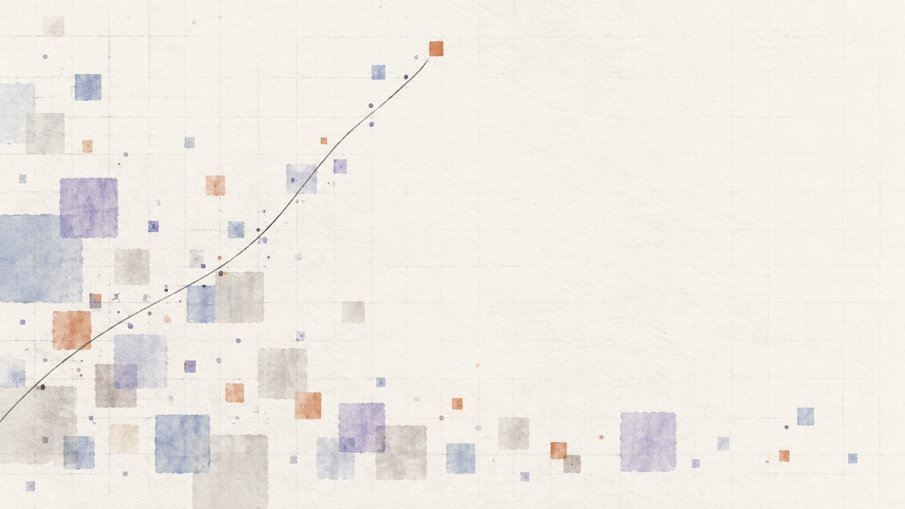
Product design · Pune, India
I’m Aatif. I lead product design from the first ambiguous question through to the system teams can actually ship.
01 / How I work
I connect the business, technical, and human parts of a problem—then turn that shared understanding into products that are easier to use and easier to evolve.
Currently leading design at Zensar. Previously at LTI, GeoSpoc, and iAuro.
02 / Selected work
Each project begins with a different tangle: too much complexity, unclear ownership, or an interface that asks people to work too hard.
Explored how complex location intelligence could help retail businesses make better decisions.
Location intelligence → 02 / 2023Operationalized component adoption so teams worked with fewer exceptions and clearer ownership.
Design operations → 03 / 2022Built clearer feedback loops through motion and sound so complex states were easier to read.
Product UX →03 / Experiments
Outside product work, I use small interactive studies to explore the threshold between atmosphere and information.
San Francisco / Light study
A city that changes with the time where it lives.
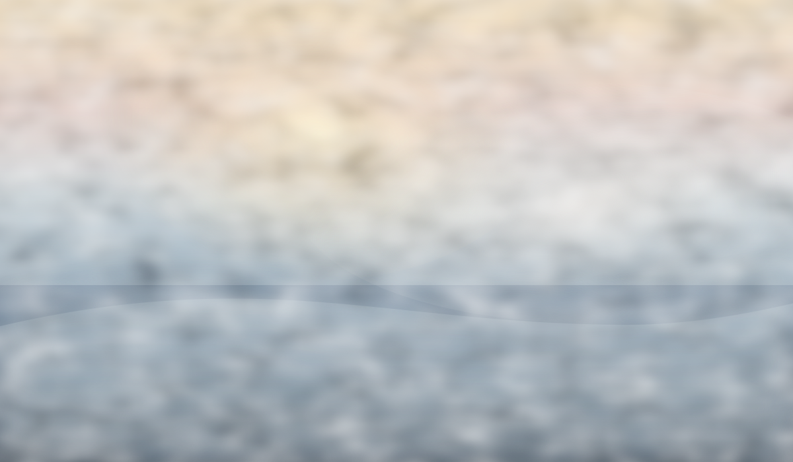
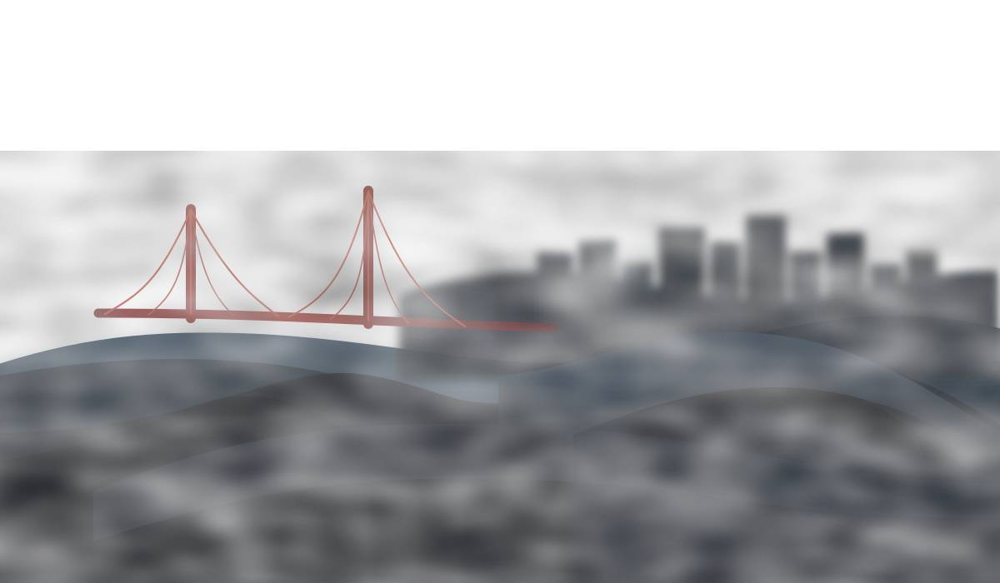
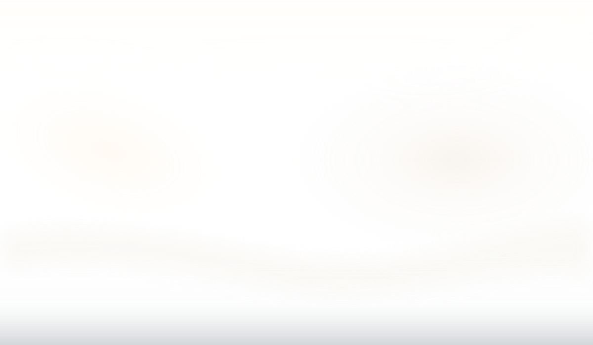
It is 10:33pm in San Francisco.
An original layered illustration, graded and illuminated in real time.
04 / Contact
Books that shaped how I think.
Donella H. Meadows
Richard Rumelt
Don Norman
A progression of product, systems, and platform work — focused on clarity, leverage, and long-term thinking.

Explored how accessible geographic insight could reduce guesswork for retail businesses.

Operationalized component adoption so teams shipped with fewer exceptions and clearer ownership.

Built clearer feedback loops through motion and sound so complex states were easier to read.

Translated long-range platform bets into product decisions teams could actually execute.

Reduced workflow fragmentation by replacing patchwork experiences with a coherent interaction model.
GeoMarketeer Case study · Draft 02
Helping retail businesses investigate a place before investing in it.
I contributed to research as part of a broader team and owned the end-to-end UX/UI design, from navigation explorations and wireframes through to the final interface.
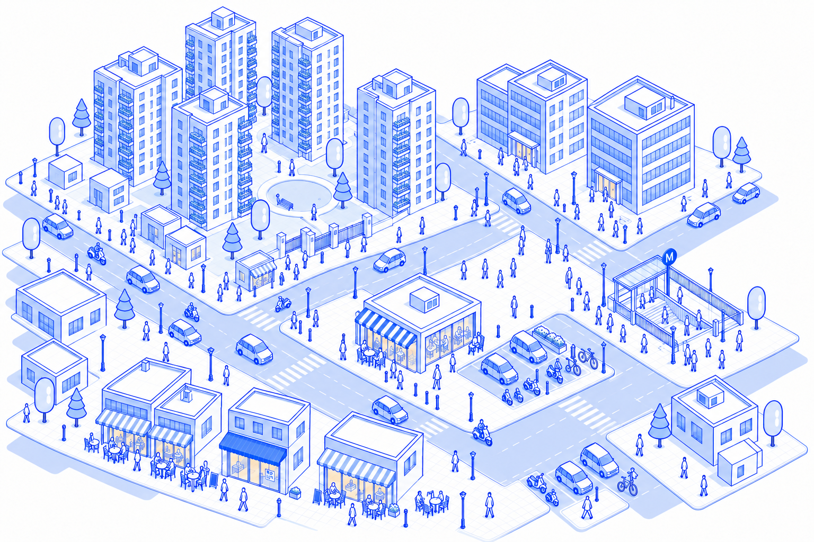
Preparing the neighborhood…
The illustration could not load. You can still follow Sid’s story below.
01 / The idea
This busy café lane looked like a promising place.
02 / The assumption
Surely there was room for one more?
03 / The doubt
The metro explained some of the crowd. It didn’t tell Sid who would buy.
04 / The context
Who lives and works nearby? What do they spend? What do the existing cafés already offer?
05 / The response
GeoMarketeer helps businesses understand a neighborhood before choosing where to open.
Business owners and local franchise operators needed to investigate retail locations. They were gathering information manually, while existing GIS tools offered workflows that often assumed specialist knowledge.
Research with six businesses over six weeks revealed difficulties understanding demographics, competition and pricing. The team also observed two businesses more closely for about a month.
I contributed to the broader research effort and owned the end-to-end UX/UI. I explored several navigation arrangements and developed the feature structure, wireframes, final interface designs and onboarding.
Datasets, Filters, Basemaps and Reports shared a consistent left navigation. Drawing on Google Maps as a reference, detailed controls appeared progressively beside the map, giving owners room to investigate without covering the location.
GeoMarketeer launched and was used by local business and franchise operators in Pune to investigate retail locations and produce analysis. We continued gathering their feedback on usability and how information could be presented more usefully.
01 / Understanding the problem
Choosing a store location comes with several questions disguised as one.
Who spends time here? What do they buy? What might they pay? Who already serves them?
“Where should we open?” turns out to have quite a large extended family.
Working with the broader research team, I helped investigate how existing and new retail businesses approached these decisions. Existing businesses could describe the realities of entering a market. New businesses helped us understand the uncertainty before that commitment.
Business owners and local franchise operators were the primary users. Researchers and GIS specialists observed their use of the tool, while the owners’ needs and feedback guided the experience.
Over six weeks, we spoke with six businesses, including sports brands, cafés and restaurants. We also observed two businesses more closely for about a month.
Four difficulties kept appearing.
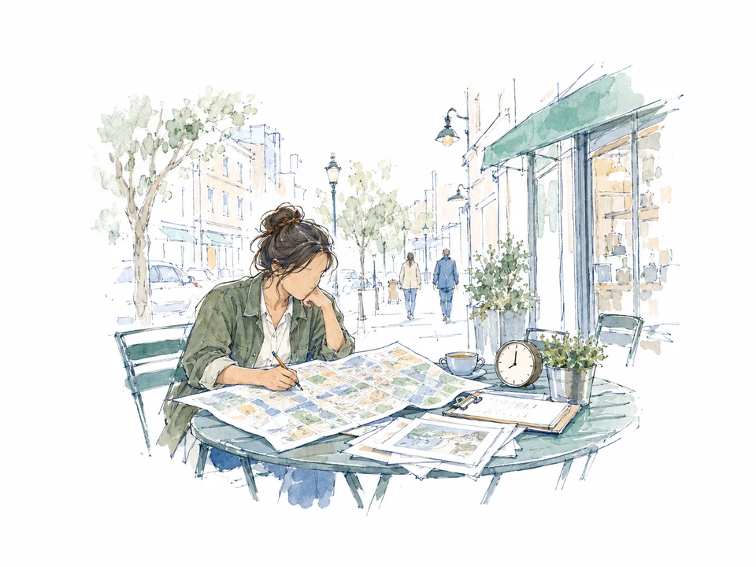
Understanding the area took time.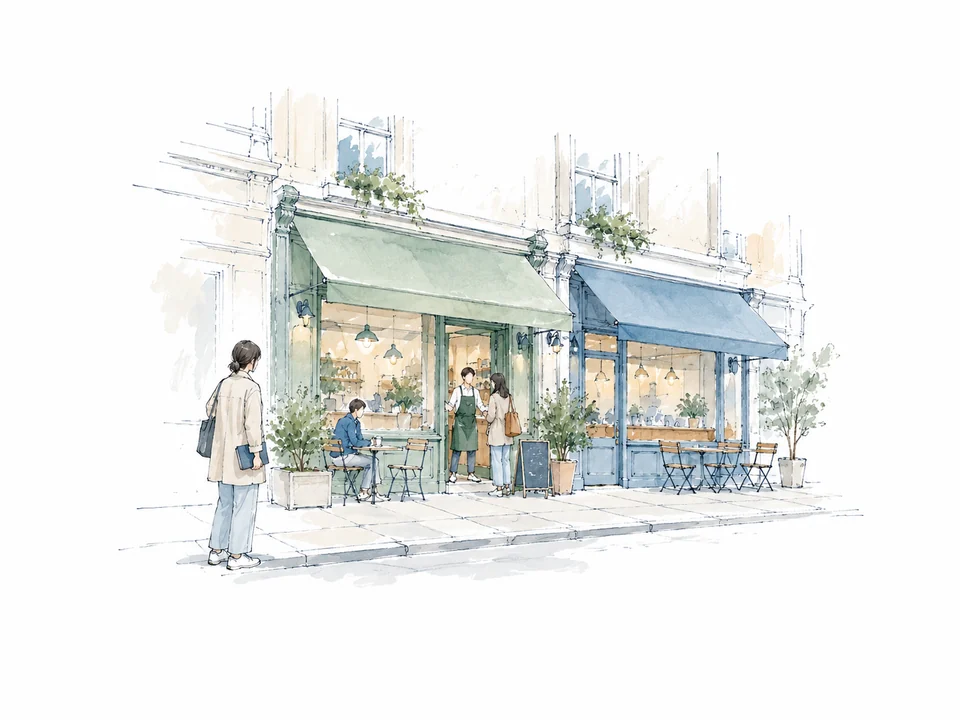
Competition was difficult to assess.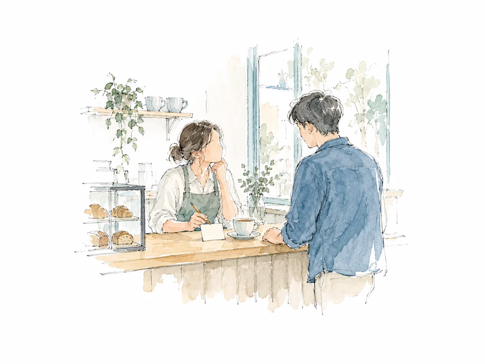
Pricing lacked sufficient context.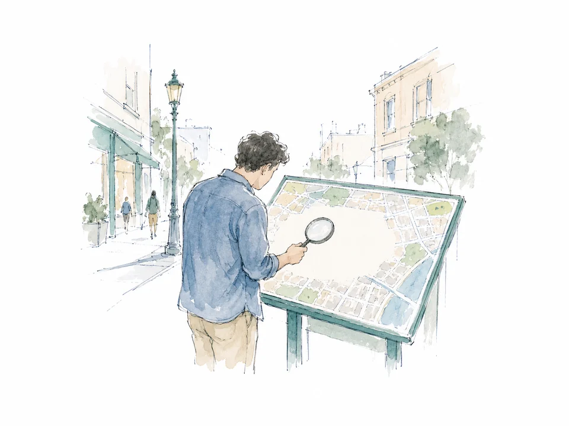
Location analysis was hard to access.The businesses were already doing research. Much of the work involved gathering scattered information and trying to assemble a useful picture.
02 / Examining the tools
Geographic Information Systems—GIS—offered ways to investigate these questions.
A map shows where things are. GIS adds information about those places, allowing someone to explore boundaries, businesses and other characteristics of an area.
That was useful territory for GeoMarketeer.
But our evaluation of existing tools revealed another problem: accessing the information could require considerable effort and specialist knowledge.
We looked at the steps involved in investigating a location—from finding the right view to taking the findings away.
Someone researching a potential store location had acquired an unexpected side project: learning GIS.
Our challenge became:
How could retail businesses investigate a location without first becoming experts in the tool?
03 / Turning research into structure
The research generated a substantial feature list.
We needed to account for geographic boundaries, datasets, map types, search, custom filters and reporting. Across India, the underlying information included city extents, pin-code boundaries, localities and other geographic layers.
The temptation was obvious: put everything within reach.
The problem was equally obvious: everything would then be within reach.
We grouped the requirements into four areas:
| Area | What someone needed to do |
|---|---|
| Data | Choose the information relevant to their investigation. |
| Maps | Find a place and choose how to view it. |
| Queries | Narrow the information around their requirements. |
| Reports | Take the findings away for further use. |
This grouping connected the research to three design responses:
That last need came directly from the research: owners wanted reports they could download. The work needed to remain useful after someone closed the browser.
04 / Exploring the navigation
Our early designs drew from conventional GIS interfaces. Actions sat across toolbars, navigation menus and dialogs over the map. A left sidebar was already part of that arrangement.
We tested these early layouts with business owners and continued gathering feedback as the designs developed. I owned the UX/UI iterations within that broader research effort.
I explored several navigation arrangements, including top and floating toolbars, side panels and split layouts. The sketches helped me consider where the main tasks would live, how much room their controls needed, and how much geographic context remained visible.
The final structure brought Datasets, Filters, Basemaps and Reports into a consistent left navigation. Selecting an activity revealed its detailed controls alongside the map.
This let us accommodate additional options and filters progressively: the opening view could stay focused, with more detail available as owners continued their investigation.
Google Maps informed the relationship between the map and its supporting panel. The trade-off was deliberate: some horizontal map space went to the controls, giving owners room to work with information while keeping the location in view.
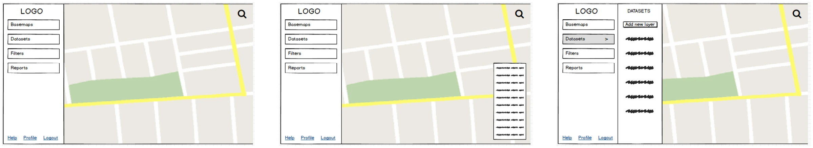
Reading the early and final screens together shows two changes. The concerns below describe the design analysis of those layouts.
05 / Refining the experience
The final interface carried the navigation structure through to the details of the workspace.
These details helped express the structure of the product: what was available, where it lived and how to begin.
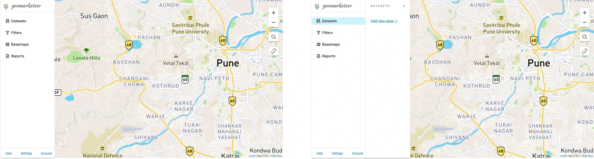
06 / Bringing the experience together
Return to someone like Sid.
The starting point is a location. The next step is deciding what to investigate about it.
The experience was designed to support that progression:
Locate the place under consideration.
Select the datasets and layers that help describe it.
Apply filters based on the business’s requirements.
Generate a report for use beyond the application.
A map became the workspace for investigating a business question.
07 / Launch and continued feedback
GeoMarketeer launched as a product. Local business and franchise operators in Pune used it to investigate retail locations and produce analysis.
Among them were local operators associated with Starbucks, Nike and Manyavar.
We continued gathering their feedback on what needed improvement and how information could be presented more usefully. Their experience of using the product kept informing discussions about usability and the interface.
My contribution spanned the end-to-end UX/UI, supported by the broader research team: feature structure, several navigation arrangements, wireframes, final interface designs and onboarding.
The work brought a broad set of geographic capabilities into everyday actions: finding an activity, choosing information, adjusting an investigation and taking the findings away.
GeoSpoc was later acquired by Ola. GeoMarketeer was subsequently shelved.
Long-form essays and short notes on product, leadership, and craft.